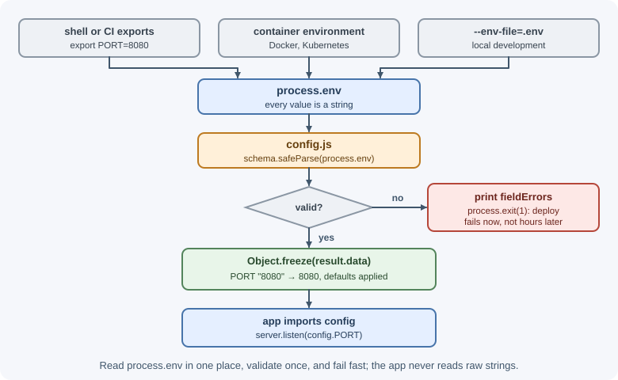
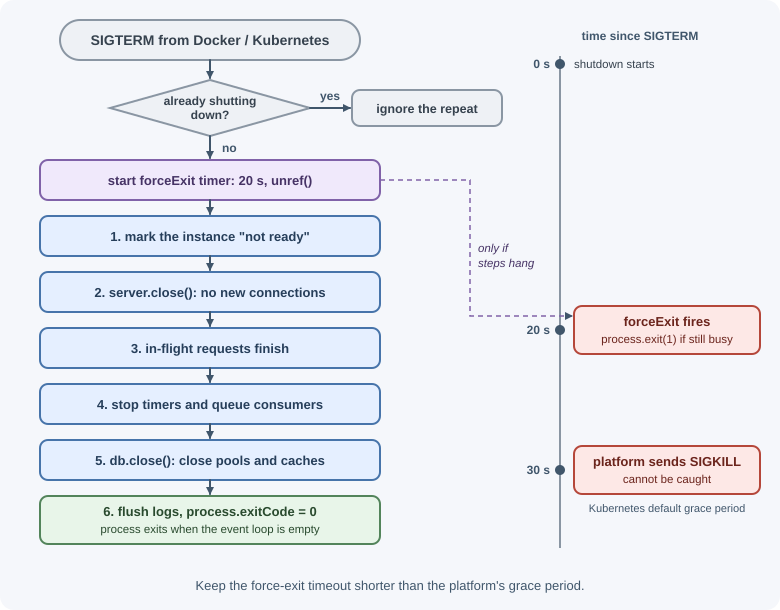

Process, Environment Variables, and Configuration¶
Every running Node.js program is an operating-system process, and the global
process object is its control panel: command-line arguments, environment
variables, exit codes, signals, memory usage, and standard input and output.
This page explains how a backend reads its configuration and shuts down
cleanly.
Why it matters¶
The same code runs on a laptop, in CI, in staging, and in production, with different database addresses, secrets, and ports. That difference must live in configuration, not code. Production platforms also stop and restart your process constantly—during deploys, scaling, and crashes—so handling signals and shutting down gracefully decides whether users see failed requests.
Real-world usage¶
- The Twelve-Factor App, a methodology its authors drew from their work on the Heroku platform, says an app should store config in environment variables. They are easy to change between deploys without code changes and are unlikely to be committed to the repository by accident (The Twelve-Factor App: Config).
- Kubernetes gives a Pod a grace period to terminate gracefully, which
defaults to 30 seconds. Your process receives
SIGTERMat the start of that period (Kubernetes docs: Pod lifecycle). - Docker's
docker stopsendsSIGTERMto the container's main process, thenSIGKILLafter a grace period. The signal reaches only that main process (Docker docs: docker container stop). - The official Node.js Docker image's best-practices guide recommends
CMD ["node","index.js"]instead ofnpm start, soSIGTERMandSIGINTreach Node.js "instead of npm swallowing them". It also recommendsdocker run --init(nodejs/docker-node: Best practices).
Popular tools and providers: --env-file and process.loadEnvFile() built
into Node.js; dotenv; zod or envalid for validation; AWS Secrets Manager,
HashiCorp Vault, and Doppler for secrets; PM2, systemd, Docker, and
Kubernetes for process lifecycle.
How it works¶
The process object¶
process is global; you can also import it with
import process from "node:process".
| Property / method | Example value | Use |
|---|---|---|
process.pid |
48213 |
Process ID, useful in logs. |
process.platform |
"linux" |
OS family. |
process.cwd() |
"/srv/app" |
Current working directory (where the process was started). |
process.argv |
["/usr/bin/node", "/srv/app/cli.js", "--force"] |
Command-line arguments. |
process.env |
{ PORT: "3000", ... } |
Environment variables. |
process.exitCode |
1 |
Exit code used when the process ends naturally. |
process.exit(code) |
— | Ends the process immediately. |
process.memoryUsage() |
{ rss, heapTotal, heapUsed, external, arrayBuffers } |
Memory in bytes. |
process.uptime() |
523.4 |
Seconds since the process started. |
process.hrtime.bigint() |
1234567890123n |
High-resolution monotonic time in nanoseconds, for measuring durations. |
process.version |
"v24.3.1" |
Node.js version. |
const start = process.hrtime.bigint();
await doWork();
const ms = Number(process.hrtime.bigint() - start) / 1e6;
console.log(`took ${ms.toFixed(1)} ms`);
Use process.hrtime.bigint() or performance.now() for durations; system
clock time (Date.now()) can jump when the clock is adjusted.
Command-line arguments¶
process.argv[0] is the Node.js executable and process.argv[1] is the
script. Your arguments start at index 2. util.parseArgs parses flags
without a library:
// cli.js — run: node cli.js --port 8080 --verbose report.csv
import { parseArgs } from "node:util";
const { values, positionals } = parseArgs({
options: {
port: { type: "string", short: "p", default: "3000" },
verbose: { type: "boolean", short: "v", default: false },
},
allowPositionals: true,
});
console.log(values); // [Object: null prototype] { port: '8080', verbose: true }
console.log(positionals); // [ 'report.csv' ]
values is created without a prototype, so console.log labels it
[Object: null prototype]. It behaves like a normal object for reading
properties.
Environment variables¶
Environment variables are key–value strings that the operating system or a platform passes to a process. They are the standard way to configure a backend per environment.
PORT=8080 DATABASE_URL=postgres://localhost/app node server.js
const port = Number(process.env.PORT ?? 3000);
Facts to remember:
- Values are always strings.
"false"is truthy and"10"is not a number until you convert it. - A missing variable is
undefined. - Changing
process.envaffects only the current process and its children.
Loading variables from a file¶
For local development, keep variables in a .env file and load them:
node --env-file=.env server.js
# .env (never commit real secrets)
PORT=3000
DATABASE_URL=postgres://localhost:5432/orders
JWT_SECRET=dev-only-secret-change-me
Node.js also provides process.loadEnvFile(path). The popular dotenv
package does the same in older setups. In production, real values come from
the platform: container settings, a secrets manager, or the deployment
system—not a file committed to git. See
environment variables
and configuration and secrets.
Validating configuration at startup¶
Read and validate all configuration once, at startup, in one module. If something required is missing or malformed, fail immediately with a clear message instead of failing on the first request hours later.
// config.js (zod 4)
import { z } from "zod";
const schema = z.object({
NODE_ENV: z.enum(["development", "test", "production"]).default("development"),
PORT: z.coerce.number().int().positive().default(3000), // "8080" → 8080
DATABASE_URL: z.url(),
JWT_SECRET: z.string().min(32),
LOG_LEVEL: z.enum(["debug", "info", "warn", "error"]).default("info"),
});
const result = schema.safeParse(process.env);
if (!result.success) {
console.error("Invalid configuration:", z.flattenError(result.error).fieldErrors);
process.exit(1);
}
export const config = Object.freeze(result.data);
With an invalid DATABASE_URL and a short JWT_SECRET, this prints
{ DATABASE_URL: [ 'Invalid URL' ], JWT_SECRET: [ 'Too small: expected
string to have >=32 characters' ] } and exits with code 1. (With zod 3,
write z.string().url() and result.error.flatten().fieldErrors.)
The rest of the application imports config instead of reading
process.env directly, which keeps types correct and makes it obvious what
settings exist.

What NODE_ENV does¶
NODE_ENV is a convention, not a Node.js feature. Node.js itself ignores
it. Libraries read it: with NODE_ENV=production, Express caches view
templates and CSS generated by CSS extensions, and generates less verbose
error messages. Many other tools skip development-only behavior. Use it to
describe the kind of environment (development, test,
production), not which deployment it is—staging
should usually run with NODE_ENV=production and its own configuration
values.
Standard streams¶
| Stream | Use |
|---|---|
process.stdin |
Readable: input piped or typed into the process. |
process.stdout |
Writable: normal output (console.log). |
process.stderr |
Writable: errors and diagnostics (console.error). |
Containers and platforms collect stdout and stderr as logs, so servers should log there rather than to local files.
Exit codes¶
A process reports success or failure to whatever started it through its exit code.
| Code | Meaning |
|---|---|
0 |
Success. |
1 |
General failure; also used by Node.js for an uncaught exception. |
13 |
Node.js: an ES module's top-level await never settled. |
128 + N |
Terminated by a fatal signal N; Node.js follows the same convention (for example, 130 = SIGINT, 137 = SIGKILL, 143 = SIGTERM). |
There are two ways to exit:
process.exitCode = 1; // exit with 1 when the event loop is empty (preferred)
process.exit(1); // exit NOW: pending writes, timers, and I/O are dropped
Prefer setting process.exitCode and letting work finish. Use
process.exit() when you must stop immediately, such as after logging a
fatal error.
Signals¶
Operating systems send signals to processes:
| Signal | Sent when | Default behavior |
|---|---|---|
SIGINT |
You press Ctrl+C in a terminal. | Exit. |
SIGTERM |
A process manager, Docker, or Kubernetes asks the process to stop. | Exit. |
SIGKILL |
Forced kill (for example, after a shutdown grace period). | Exit immediately; cannot be caught. |
SIGHUP |
The terminal closed; some tools use it to reload config. | Exit. |
Orchestrators usually send SIGTERM, wait for a grace period (Kubernetes
defaults to 30 seconds), then send SIGKILL. Your process should finish its
work within that window.
On Windows, signal support is limited: Ctrl+C produces SIGINT, and you can
listen for SIGTERM, but Windows does not send it the way Linux does.
Production Linux containers are where signal handling matters most.
When to use and when not to use¶
- Use environment variables for anything that differs between environments: URLs, ports, credentials, feature switches.
- Use a secrets manager (injected as environment variables or read at
startup) for credentials in production;
.envfiles are for local development. - Use one validated config module that every other file imports.
- Use
process.exitCodefor normal failures, andprocess.exit()only when you must stop at once. - Do not put structured or large config (lists of rules, feature matrices) into dozens of environment variables; load a config file or a config service and validate it the same way.
- Do not read
process.envin hot paths; read it once at startup.
| Config kind | Where it belongs | Example |
|---|---|---|
| Per-environment values | Environment variables | DATABASE_URL, PORT |
| Secrets | Secrets manager → environment | JWT_SECRET, API keys |
| Defaults shared by all environments | Code (in the config schema) | LOG_LEVEL default info |
| Large or structured settings | Versioned config file or service | Rate-limit rules per plan |
Graceful shutdown¶
A graceful shutdown follows this sequence:

Step 1 matters behind a load balancer: once the instance reports "not ready", the load balancer stops sending it new traffic.
Practical examples¶
A complete shutdown handler¶
// server.js
import { createServer } from "node:http";
import { config } from "./config.js";
import { app } from "./app.js";
import { db } from "./db.js";
const server = createServer(app);
server.listen(config.PORT, () => {
console.log(`Listening on port ${config.PORT} (pid ${process.pid})`);
});
let shuttingDown = false;
async function shutdown(signal) {
if (shuttingDown) return; // ignore repeated signals
shuttingDown = true;
console.log(`${signal} received: shutting down`);
// Safety net: never hang longer than the platform's grace period.
const forceExit = setTimeout(() => {
console.error("Shutdown timed out; forcing exit");
process.exit(1);
}, 20_000);
forceExit.unref();
try {
await new Promise((resolve, reject) => {
server.close((error) => (error ? reject(error) : resolve()));
server.closeIdleConnections(); // idle keep-alive sockets (automatic since Node.js 19)
});
await db.close(); // after requests finish, close the pool
console.log("Shutdown complete");
process.exitCode = 0;
} catch (error) {
console.error("Error during shutdown", error);
process.exitCode = 1;
}
}
process.on("SIGTERM", () => shutdown("SIGTERM"));
process.on("SIGINT", () => shutdown("SIGINT"));
Reading piped input¶
// count-lines.js — run: cat access.log | node count-lines.js
let lines = 0;
for await (const chunk of process.stdin) {
lines += chunk.toString().split("\n").length - 1;
}
console.log(`${lines} lines`);
Starting the process correctly in containers¶
# Run node directly so it receives SIGTERM.
CMD ["node", "src/server.js"]
npm start adds a wrapper process. The official Node.js Docker
best-practices guide warns that npm can swallow SIGTERM and SIGINT, so
containers should start Node.js directly. When Node.js runs as process ID 1
in a container, also consider an init process (docker run --init) so
signals and zombie processes are handled correctly.
Best practices¶
- Put every environment-specific value—URLs, ports, credentials, feature switches—in environment variables, not code.
- Validate configuration once at startup and fail fast on errors.
- Convert types explicitly; environment variables are strings.
- Never commit
.envfiles with real secrets; commit a.env.examplewith placeholder values instead. - Never log secrets or the whole
process.env. - Handle
SIGTERMandSIGINTwith a graceful shutdown and a forced-exit timeout. - Prefer
process.exitCodeoverprocess.exit(). - Log to stdout/stderr and let the platform collect logs.
In production¶
- Deploys cause a burst of errors.
- Symptom: clients see
502/503orECONNRESETfor a few seconds on every deploy. - Detect: errors line up with pod or instance terminations, and the app never logs "SIGTERM received".
- Cause: the process never sees
SIGTERM(started vianpm start, or a shell wrapper as PID 1), or it exits without draining requests. - Fix:
CMD ["node", "server.js"], aSIGTERMhandler that closes the server, and a forced exit shorter than the platform's grace period. - Exit code 137 in the logs.
- Symptom: containers restart with exit code 137, and shutdown logs are cut off.
- Detect: the orchestrator reports the container as killed, or
OOMKilledfor memory. - Cause: 137 = 128 + 9 (
SIGKILL): either the grace period ran out during shutdown, or the container exceeded its memory limit. - Fix: finish shutdown faster than the grace period (Kubernetes defaults
to 30 s), or fix memory use and set
--max-old-space-sizebelow the container limit. - The app starts with wrong settings.
- Symptom: production connects to a test database, or a feature flag behaves the opposite way.
- Detect: log the non-secret config values (never secrets) at startup, and compare them with what you expected.
- Cause: a missing variable silently fell back to a default, or
"false"was treated as truthy. - Fix: validate with a schema, make production-critical values required (no defaults), and parse booleans explicitly.
- Secrets leak into logs.
- Symptom: API keys appear in log search or error trackers.
- Detect: secret-scanning alerts, or searching logs for known key prefixes.
- Cause: logging
process.envor a whole config object on startup or in error handlers. - Fix: log an allowlist of safe keys, redact secrets in the logger, and rotate any leaked credential.
Important terminology¶
- Process: A running instance of a program with its own memory and ID.
- Environment variable: A named string value passed to a process by its environment.
process.argv: The array of command-line arguments.- Exit code: The number a process returns when it ends;
0means success. - Signal: An OS notification sent to a process, such as
SIGTERM. - Graceful shutdown: Finishing in-flight work and releasing resources before exiting.
- Grace period: The time a platform waits after
SIGTERMbefore sendingSIGKILL. - Fail fast: Stopping immediately when a required precondition is not met.
Common mistakes and misconceptions¶
- Treating
process.env.DEBUG === "false"as false, or usingif (process.env.FLAG), which is true for"false". - Reading
process.envall over the codebase instead of through one validated config module. - Hard-coding secrets "temporarily."
- "
NODE_ENV=productionmakes Node.js faster." Node.js ignores it; libraries decide what it changes. - Calling
process.exit()right afterconsole.log, which can cut off output that has not been flushed. - Not handling
SIGTERM, so every deploy drops in-flight requests. - Starting containers with
npm start, so signals never reach Node.js.
Revision questions¶
- Why are environment variables used for configuration, and what type are their values?
- What are the benefits of validating configuration at startup?
- What is the difference between
process.exit(1)andprocess.exitCode = 1? - What do
SIGTERMandSIGKILLmean, and which one can you handle? - List the steps of a graceful shutdown.
- What does
NODE_ENVactually control?